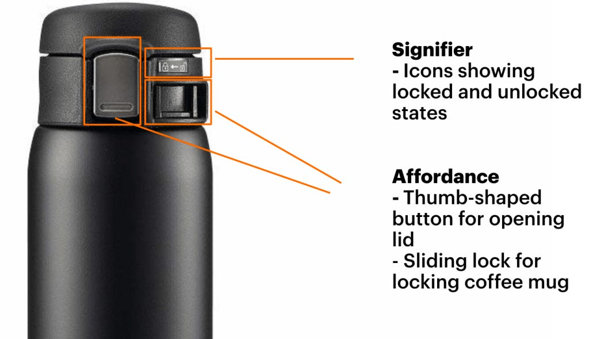
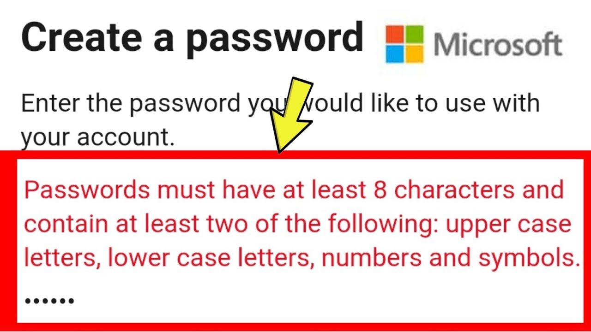
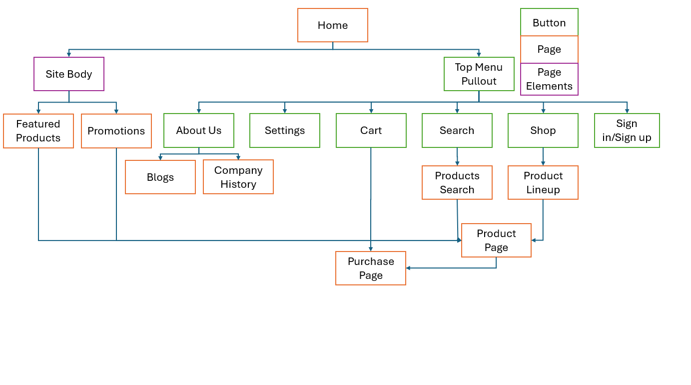
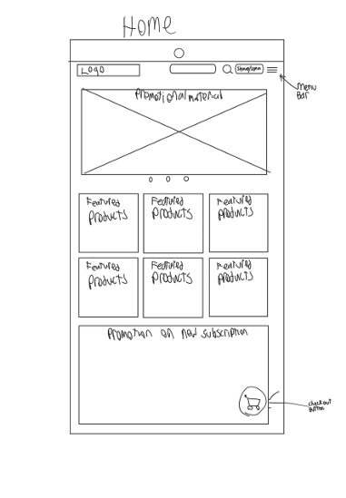
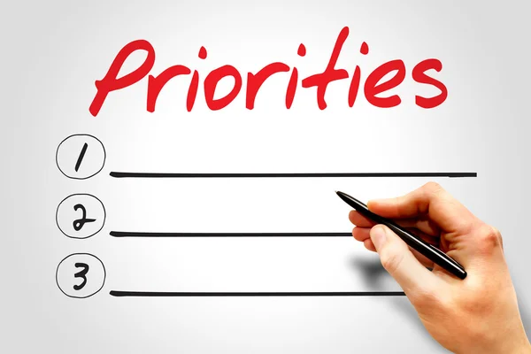

Systems Design, Engineering, and Organization
Content and Information Architecture
User Experience and Visual Design
Security and Ethics
Priorities
Systems Design, Engineering, and Organization


- Visibility/Signifiers: When creating a website or digital environment that is to be interacted with, some elements of the webpage are more important than others. Just like how a fire escape sign is meant to be visible during a fire, some elements of the webpage are designed to draw users to the option. Such elements such as color, design and placement can indicate how the user can interact with the element. An example is the hamburger side-bar menus where users can intuitively understand that they can get more menu options by selecting the option.
- Constraints: Constraints limit the range of possibilities for interaction. Constraints are meant to help steer people away from certain actions that they are not authorized to take, such as a lock on a door. A common constraint can be found when you are making an account. Some websites limit how simple you can make your password in order to encourage better security for the end user.
- Affordances: Affordances are in contrast actions that you are allowed to take. This tends to interact with signifiers by indicating what you can do in an environment. For example, a door with a pull handle indicates that the door is able to be pulled open. In a digital environment, things like links are underlined and colored blue to indicate they lead to another part of the internet.
- Systems Mapping: Creating a systems map allows you to get a starting point on how the different elements interact with each other. With systems mapping, you can identify what gaps you have in your system before it becomes a problem later down the line.
Content and Information Architecture
- Information Architecture: Information architecture is the backbone of the digital interface. It visualizes the structure of the digital project to better make sense of how all the elements work with each other.
User Experience and Visual Design
- UI and UX: User interface and User Experience are both important elements that makes up a digital environment. Both create an experience that should measure up to the type of content that the designer intends.
- UI: UI or User Interface is the look or feel of the digital environment. This can be described as the colors, shapes and placements of different elements. This is important as it determines the tone of the website. A website that is meant to appeal to kids will be different than a website that is selling hyper cars.
- UX: UX or User Experience is how a website functions. This is the stuff that people interact outside of the design itself. For example, the responsiveness and the structure of the website along with great products and a finely tuned algorithm makes for a great user experience.
Security and Ethics
- Security Just like in real life, certain spaces need security to prevent unauthorized access into aspects of the physical environment. You wouldn’t want just anyone to have access to the server room of a hospital for example. This is the same in the digital environment. Any website that has specific user logins and stores user data must have robust protections in place to prevent rouge access to the website. Social engineering attacks are the most common by far but other attacks are common.
Priorities
- Top Priority:Cybersecurity and UI and UX design is the most important aspect to me. UI and UX is the main thing that the general public will interact with. Understanding good UI and UX is a complicated field that can be a hit or miss. Understanding the ergonomics of how people will interact with your device would probably take the most effort to implement and therefore require the most focus. Cybersecurity is important as it protects customer/client information. Additionally it protects the reputation of the organization who runs the website. Nobody would want to interact with a webstite that is known for shoddy security.
- Important: Systems engineering and design and Content architecture are both important to the backbone of the website while their contributions are unkown to the general public, they are nonetheless vital to the sucess to the end user product. By visualizing your systems design and information architecture, you gain a better understanding of how your system is stuctured and what changes are needed.